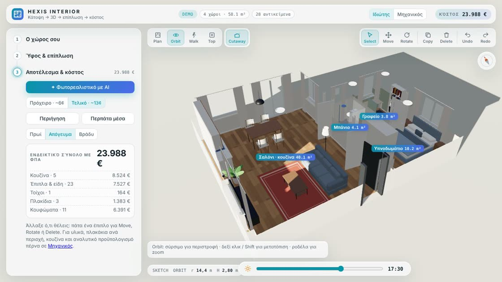
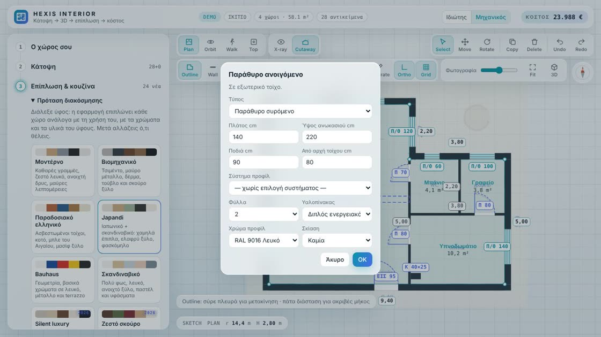
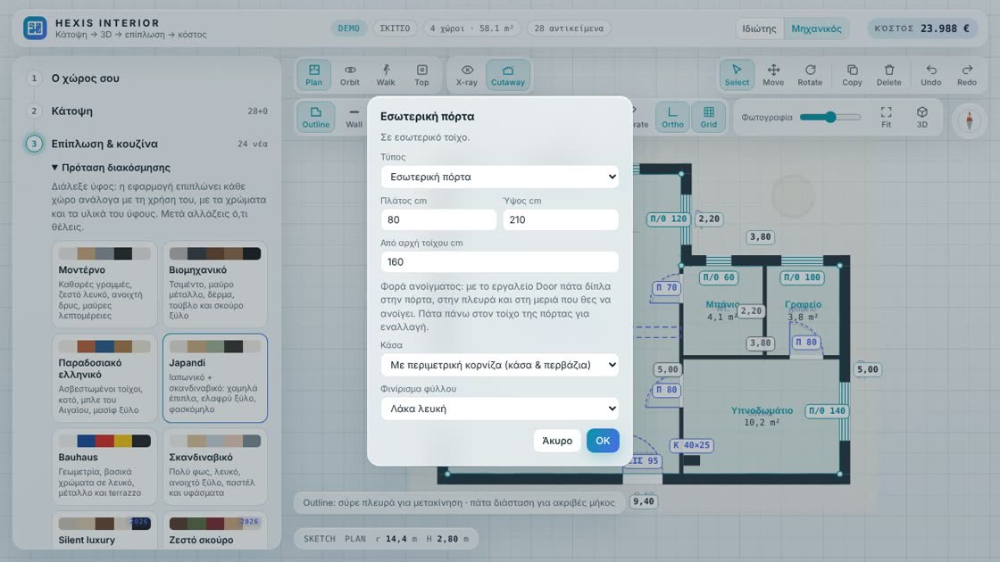
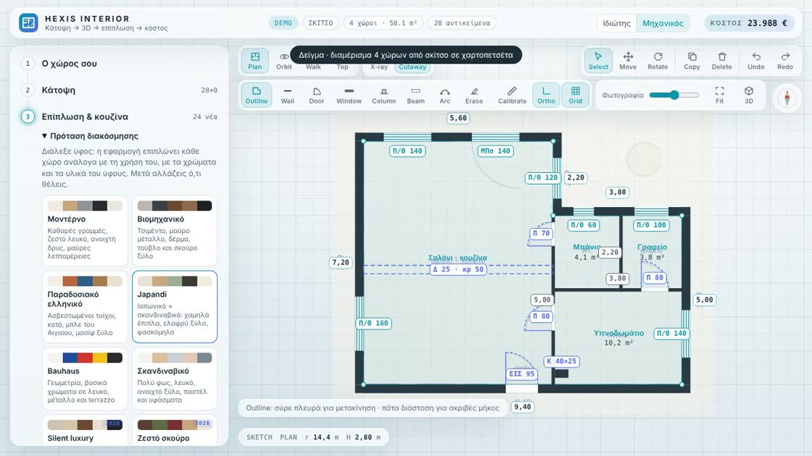
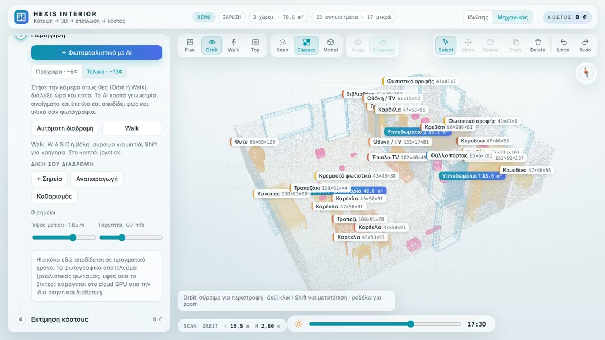
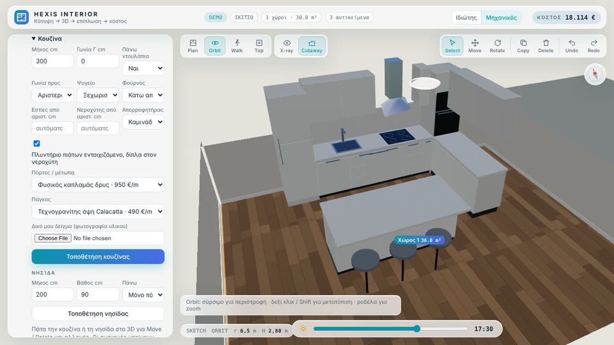
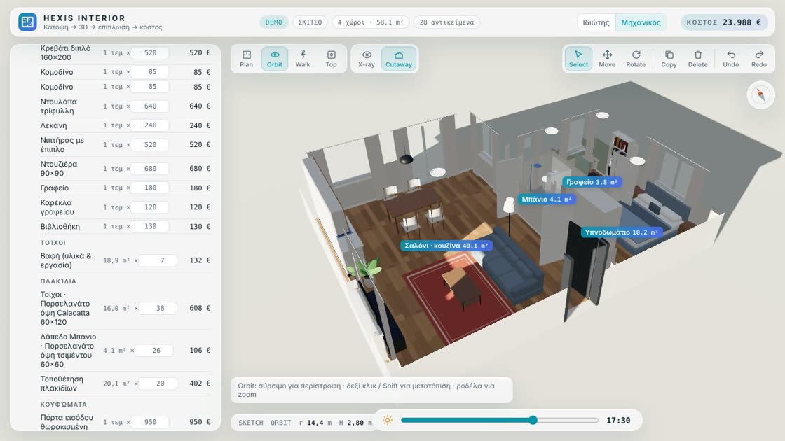
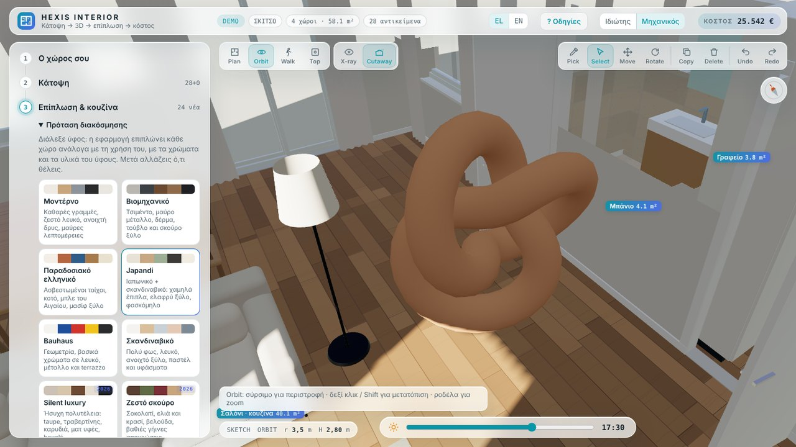

Οδηγός χρήσης
Σχεδιασμός εσωτερικού χώρου σε πραγματικές διαστάσεις: κάτοψη, τρισδιάστατο μοντέλο, επίπλωση, υλικά, κουφώματα και επιμέτρηση σε ενιαίο περιβάλλον. Τα βίντεο παίζουν σε επανάληψη· πάτα πάνω τους για παύση. Το ↓ PDF κατεβάζει τον οδηγό για μελέτη, με ενεργά βίντεο.
1Entry ή Pro
- Σε κάθε καρτέλα είναι διαθέσιμα όλα τα εργαλεία: η μπάρα της κάτοψης (Select, Outline, Wall, Door, Window, Column, Beam, Arc, Erase, Room, Calibrate, Align, Ortho, Grid, Fit, 3D, Extras, Notes, ύψος και πάχη τοίχων), Plan/Orbit/Walk, η στήλη Δομικά · Οικοδομικά · Γυψοσανίδα · Ηλεκτρολογικά · Υδραυλικά · Έπιπλα · Κουζίνα, και ο πίνακας βημάτων.
- 📐 Αποτύπωση προσθέτει τη μπάρα αποτύπωσης: αντικείμενα, φωτογραφίες, βίντεο, σημειώσεις, Notes, PDF αποτύπωσης, εξώστη/σκάλα, laser.
- € Κόστος κρατά ανοιχτό τον πίνακα κόστους.
- Κάθε εντολή είναι μαζεμένη σε ένα σημείο. Ό,τι επιλέγεις στην κάτοψη δείχνει τις ενέργειές του σε μία μπάρα κάτω (Ιδιότητες, Διαγραφή, Undo). Undo/Redo πάντα πάνω δεξιά.
Entry ή Pro: η επιλογή είναι στις Ρυθμίσεις (⚙). Αλλάζει όσα εργαλεία βλέπεις. Τα έργα και τα σχέδια μένουν ίδια· η επιλογή σου θυμάται. Οι οικογένειες αντικειμένων (Δομικά, Υδραυλικά, Έπιπλα κ.λπ.) λειτουργούν σε κάθε χώρο εργασίας. Στην αποτύπωση είναι διαθέσιμες κι αυτές, π.χ. για να βάλεις είδη υγιεινής σε ένα μπάνιο. Το μενού μένει ανοιχτό μέχρι να το κλείσεις εσύ. Τοποθέτηση στην κάτοψη (2D): διάλεξε π.χ. Υδραυλικά → Λεκάνη και κάνε κλικ στην κάτοψη. Το αντικείμενο κολλάει μόνο του στον πλησιέστερο τοίχο με την πλάτη προς τον τοίχο (R: περιστροφή, Alt: χωρίς κόλλημα, Esc ή δεξί κλικ: ακύρωση). Πρίζες και διακόπτες μπαίνουν με κλικ δίπλα στον τοίχο και σέρνονται κατά μήκος του. Ύψος: στο μενού Ηλεκτρολογικά διαλέγεις «τυπικό» (πρίζα 30, διακόπτης 110), 30, 110, 120 cm ή «ορίζω εγώ» (σε ρωτάει σε cm σε κάθε κλικ). Διπλό κλικ πάνω στο σύμβολο αλλάζει το ύψος (στον άξονα) οποιαδήποτε στιγμή. Τα φωτιστικά οροφής μπαίνουν με κλικ στο σημείο τους. Μετά πατάς Orbit ή 3D για έλεγχο. Οικοδομικά και Γυψοσανίδα ανοίγουν ακόμα στο 3D. Μπάνιο: στα Υδραυλικά υπάρχουν λεκάνες κρεμαστές με εντοιχισμένο καζανάκι, όπου φαίνεται μόνο η πλακέτα μπουτόν (λευκή, μαύρη ματ, χρώμιο), και ξεχωριστές πλακέτες (λευκή, χρώμιο, μαύρη ματ, inox, χρυσή) στο 1,00 m. Υπάρχει και πάγκος μπάνιου κρεμαστός με πλακάκι (custom) με 0 έως 3 κρεμαστά ράφια από κάτω. Μόλις τον βάλεις σε ρωτάει πλάτος, βάθος, ύψος από το δάπεδο, πάχος πάγκου, ράφια, απόσταση και πάχος ραφιών, πλακάκι (και τις δικές σου παραλλαγές), αν θα έχουν πλακάκι και τα ράφια, και τον νιπτήρα (επικαθήμενος, ένθετος, χωρίς). Με διπλό κλικ τα αλλάζεις. Πάνω δεξιά, στο κουτάκι του λογαριασμού, γράφει πάντα με έντονα PRO ή ENTRY, για να ξέρεις σε ποια έκδοση δουλεύεις.
- 3 βήματα: χώρος, ύφος & υλικά, αποτέλεσμα
- Pick και υλικά εμπορίου, όπως το Pro
- Σύνολο κόστους ανά ομάδα
- Πρωί, απόγευμα, βράδυ με ένα πάτημα
- Σάρωση, X-ray, Calibrate
- Υλικά ανά περιοχή τοίχου, κουζίνα, κουφώματα
- Αναλυτικός προϋπολογισμός με δικές σου τιμές

2Νέο έργο · περίγραμμα
- Η εφαρμογή ανοίγει σε κενό έργο, στο Outline. Για να δοκιμάσεις κάτι έτοιμο, πάτα Δείγμα.
- Πάτα τις γωνίες της κάτοψης με τη σειρά. Κλείνεις το περίγραμμα πατώντας ξανά την πρώτη γωνία ή Enter.
- Πάτα μια διάσταση (π.χ. 9,40) και γράψε το πραγματικό μήκος. Η απέναντι πλευρά προσαρμόζεται.
- Σύρε μια πλευρά για να τη μετακινήσεις. Undo / Redo είναι πάντα πάνω δεξιά.
- Κλείσιμο: πάτα την πρώτη κορυφή ή το κουμπί Κλείσιμο περιγράμματος στον οδηγό κάτω.
- Κορυφές: με Select ή Outline σύρε μια γωνία· οι διπλανές πλευρές τεντώνουν ή μαζεύουν και μένουν ορθές, και οι τοίχοι που ακουμπούν ακολουθούν. Ορθογωνισμός κάνει ορθές τις σχεδόν ορθές γωνίες.
- Με το δάχτυλο: πάτα μια κορυφή· κάτω ανοίγει πάνελ με βελάκια και βήμα 1 / 5 / 10 cm, Συντεταγμένες για ακριβή θέση και 90° για ορθή γωνία.
Στο βήμα 1 ορίζεις ύψος ορόφου και πάχος εξωτερικών και εσωτερικών τοίχων πριν από το 3D.
3Τοίχοι, κουφώματα, πόρτες
- Wall: πάτα αρχή και τέλος για εσωτερικό τοίχο. Κουμπώνει σε γωνίες και τοίχους.
- Window: πάτα πάνω σε τοίχο. Η εφαρμογή ρωτά τύπο: παράθυρο ανοιγόμενο, ανακλινόμενο, συρόμενο, σταθερό, ή μπαλκονόπορτα ανοιγόμενη, συρόμενη, ανυψούμενη ή minimal.
- Στο ίδιο παράθυρο διαλέγεις σύστημα προφίλ (ALUMIL, EUROPA, ELVIAL), φύλλα, υαλοπίνακα, χρώμα RAL, ανοδίωση ή ξυλομίμηση, και σκίαση.
- Door: για εσωτερική πόρτα ρωτά αν θα έχει περιμετρική κορνίζα (κάσα και περβάζια) ή θα είναι χωρίς, με κρυφή κάσα στο επίπεδο του τοίχου.
- Όλα με το Select: κλικ πάνω στην πόρτα ή στο παράθυρο την επιλέγει, σύρσιμο τη μετακινεί κατά μήκος του τοίχου (με Alt ανά 1 mm), οι πορτοκαλί αποστάσεις από τις άκρες του τοίχου γράφουν ακριβή θέση, Delete τη σβήνει.
- Φορά ανοίγματος: με την πόρτα επιλεγμένη, κάνε δεύτερο κλικ στην πλευρά και στη μεριά που θες να ανοίγει. Κλικ πάνω στο ίδιο το κούφωμα κάνει εναλλαγή στις τέσσερις φορές.
- Μετακίνηση τοίχου: με Select πάτα και σύρε τον τοίχο. Φαίνονται οι καθαρές αποστάσεις από τους απέναντι τοίχους δεξιά και αριστερά· πάτα μια απόσταση για ακριβή τιμή. Στο πάνελ κάτω: βελάκια με βήμα 1 / 5 / 10 cm, Απόσταση, Delete. Στον υπολογιστή και με τα βελάκια του πληκτρολογίου.
Πάτα την ετικέτα ενός κουφώματος (π.χ. Π/Θσ 140) για να αλλάξεις οτιδήποτε. Με Erase το σβήνεις.


4Καμπύλοι & λοξοί τοίχοι
- Arc: σύρε μια πλευρά του περιγράμματος έξω ή μέσα. Πάτα την για να γράψεις το ακριβές βέλος σε μέτρα.
- Κλείσε το Ortho για τοίχους σε όποια γωνία, εξωτερικούς ή εσωτερικούς.
- Πάτα 3D. Οι καμπύλοι τοίχοι χτίζονται ομαλά, με κουφώματα που ακολουθούν την καμπύλη.
Ένας εσωτερικός τοίχος χωρίζει δύο χώρους μόνο αν ακουμπά στους τοίχους και στις δύο άκρες του. Στο καμπύλο τοίχο, φέρε την άκρη μέσα στο πάχος του.
5Υποστυλώματα, δόντια & δοκάρια
- Column: πάτα δίπλα σε τοίχο ή ελεύθερα. Διαλέγεις τύπο διατομής: Ορθογωνικό, Τοιχίο, Γωνιακό (Γ), Ταυ (Τ) ή Κυκλικό. Υπάρχουν έτοιμες διατομές (π.χ. 40×40, 100×25, Γ 60×60/25, Ø40)· εσύ γράφεις μόνο τις διαστάσεις και βλέπεις ζωντανά το σχήμα με τις διαστάσεις του. Δίπλα σε τοίχο, η πλευρά «τοίχος» κολλάει πάνω του και ο τοίχος σταματά ακριβώς στο υποστύλωμα. Στο Γ, ο Καθρέπτης γυρίζει το σκέλος δεξιά. Μακριά από τοίχο δίνεις και γωνία. Το σκυρόδεμα των υποστυλωμάτων μπαίνει στο κόστος.
- 🧱 Διαστρωμάτωση τοίχων · θερμοπρόσοψη (κάτω από τα πάχη τοίχων): διαλέγεις τούβλο (διάτρητα 6/9/12 οπών, ορθομπλόκ, συμπαγές, κυψελωτό σκυρόδεμα 10–25, θερμομονωτικό 20–30), μονή ή διπλή τοιχοποιία με μόνωση διακένου, θερμοπρόσοψη 0–12 cm (EPS λευκή ή γραφιτούχα, XPS, πετροβάμβακας) και σοβά. Βλέπεις τομή με κάθε στρώση και το πάχος της, το συνολικό πάχος και τον συντελεστή U σε σύγκριση με το όριο της κλιματικής ζώνης ΚΕΝΑΚ (Α–Δ), και το U στα υποστυλώματα (θερμογέφυρα). Η Εφαρμογή στο έργο βάζει αυτόματα το πάχος του εξωτερικού και του εσωτερικού τοίχου. Η κάτοψη δείχνει τις στρώσεις με διαγράμμιση (με ζουμ), και στο κόστος μπαίνουν τούβλα, κονίαμα, σοβάδες, πλάκες μόνωσης, κόλλα, βύσματα, πλέγμα, αστάρι, τελικό και εργασίες. Στα υποστυλώματα ο σοβάς τα τυλίγει συνεχόμενα με τον τοίχο, χωρίς ραφή, και στις ενώσεις σκυροδέματος–τοιχοποιίας (υποστυλώματα και δοκοί) μπαίνει στις ποσότητες λωρίδα υαλοπλέγματος 30 cm, ώστε να μην ανοίξει ρωγμή στον σοβά. Ο υπολογισμός U είναι ενδεικτικός· για την ενεργειακή μελέτη ισχύουν οι τιμές του κατασκευαστή.
- Beam: πάτα αρχή και τέλος του δοκαριού, μετά πλάτος και κρέμαση κάτω από το ταβάνι.
- Στην κάτοψη το δοκάρι φαίνεται διακεκομμένο, όπως στα σχέδια. Στο 3D κρέμεται από το ταβάνι.
Μετράνε παντού: τα εμβαδά των χώρων τα αφαιρούν, τα δόντια βάφονται και πλακοστρώνονται σαν τοίχοι, και η AI επίπλωση δεν βάζει ψηλές ντουλάπες κάτω από χαμηλό δοκάρι.
6Από σκίτσο, PDF ή DXF
- Βήμα 1 → ανέβασε φωτογραφία ή PDF από κάτοψη, σκίτσο ή σχέδιο επίπλωσης/κουζίνας. Σε PDF με πολλές σελίδες διαλέγεις σελίδα.
- Calibrate: πάτα τα δύο άκρα μιας γνωστής διάστασης και γράψε το μήκος της.
- DXF (Pro): ανέβασε κάτοψη σε DXF. Διαλέγεις μονάδες (m, cm, mm, βγαίνουν αυτόματα) και layers, και το σχέδιο μπαίνει σε κλίμακα 1:1, χωρίς Calibrate. Πάτα μέσα στην εσωτερική παρειά των εξωτερικών τοίχων και το περίγραμμα γίνεται αυτόματα από την κλειστή πολυγραμμή, με τόξα. Αν πατήσεις την εξωτερική παρειά, γράφεις το πάχος τοίχου και μπαίνει μέσα. Outline, Wall, Door, Window έλκονται στις κορυφές και στις γραμμές του DXF.
- Αν η κάτοψη υπάρχει ήδη, π.χ. φέρνεις το PDF του επιπλοποιού: Align → πάτα ένα σημείο στο σχέδιο, μετά το ίδιο στην κάτοψη, και ξανά για δεύτερο σημείο. Το σχέδιο μετακινείται, στρίβει και κλιμακώνεται πάνω στην κάτοψή σου.
- Τσέκαρε «Δείξε το σχέδιο και στο 3D» και πέρνα σε Top: τοποθετείς κουζίνα και έπιπλα ακριβώς πάνω στο σχέδιο με Move / Rotate.
- Σχεδίασε από πάνω με Outline, Wall, Door, Window. Με τη Φωτογραφία στη μπάρα ρυθμίζεις τη διαφάνεια.
- Βίντεο ανά χώρο: μόλις υπάρχει 3D, στο βήμα 1 εμφανίζεται κάθε χώρος με κουμπί Βίντεο. Τράβα κάθε δωμάτιο χωριστά (στάσου στην πόρτα, αργό 360°, 20–40 δευτ.) και ανέβασέ το στον χώρο του. Από το βίντεο παίρνεις χρώμα για τους τοίχους εκείνου του χώρου και μετράς σε καρέ. Τέσσερα καρέ μπαίνουν αυτόματα στο PDF ως «Υφιστάμενη κατάσταση»· με + Καρέ για το PDF προσθέτεις όποιο θέλεις.

7Από σάρωση (Pro)
- Βήμα 1 → Σάρωση: φόρτωσε point cloud σε LAS, PLY ή XYZ, από SLAM ή laser scanner.
- Βήμα 2 → Αυτόματη αναγνώριση: βγαίνουν δάπεδο, ταβάνι, τοίχοι, πόρτες, παράθυρα, χώροι, έπιπλα και μικροαντικείμενα, ως ξεχωριστές οντότητες.
- Με Scan / Classes / Model αλλάζεις προβολή· το X-ray δείχνει μέσα από τους τοίχους.

8Επίπλωση με AI
- Βήμα 3 → διάλεξε ύφος: Μοντέρνο, Βιομηχανικό, Παραδοσιακό ελληνικό, Japandi, Bauhaus, Σκανδιναβικό, και οι τάσεις του 2026 από τα διεθνή περιοδικά: Silent luxury, Ζεστό σκούρο, Neo Deco, Found luxury, Colour drenching, Coastal chic, Summer silver, Statement stone, Curves & warm minimal, At-home retreat, Refined maximalism, Book-lined, Vintage barber · Speakeasy.
- Γράψε τι θέλεις, π.χ. «γραφείο στο μικρό δωμάτιο, τραπέζι για 6». Πάτα ✦ Βελτίωση περιγραφής: η AI το κάνει ακριβή επαγγελματική οδηγία (χώροι, έπιπλα, υλικά και χρώματα, φωτισμός σε K και lumen, τι να μην μπει) χωρίς να χάσει τίποτα από όσα έγραψες. Το διορθώνεις ελεύθερα· ↺ Αρχικό κείμενο το γυρίζει πίσω. Η περιγραφή σου έχει πάντα προτεραιότητα απέναντι στο ύφος. Η βελτίωση δεν χρεώνει μονάδες.
- Πάτα ✦ AI διαρρύθμιση. Ο σχεδιαστής βλέπει την πραγματική γεωμετρία, τα κουφώματα, τις κολόνες και τα δοκάρια, ονομάζει τους χώρους και βάζει έπιπλα με έλεγχο συγκρούσεων.
- Με Select, Move, Rotate, Copy, Delete αλλάζεις ό,τι θες. Το Undo γυρίζει όλη την πρόταση πίσω.
Κάθε ύφος έχει δικά του χαρακτηριστικά έπιπλα, φωτισμό σε στρώσεις με lumen, χαλιά, φυτά και διακοσμητικά, και σέβεται τα ονόματα των χώρων. Η «Γρήγορη πρόταση» κάνει το ίδιο χωρίς AI, με κανόνες. Είναι άμεση, αλλά πιο απλή σε λοξούς χώρους.
9Κουζίνα, γωνία Γ, νησίδα & συσκευές
- Βήμα 3 → Κουζίνα: μήκος, Γωνία Γ σε cm και Γωνία προς αριστερά ή δεξιά για γωνιακή κουζίνα.
- Συσκευές: ψυγείο εντοιχιζόμενο αριστερά ή δεξιά, φούρνος κάτω από τις εστίες ή σε στήλη, απορροφητήρας καμινάδα ή ενσωματωμένος, πλυντήριο πιάτων.
- Θέση εστιών και νεροχύτη σε cm από την αριστερή άκρη· κενό για αυτόματη θέση.
- Μέτωπα (καπλαμάς, laminate, λάκα) και πάγκος (τεχνογρανίτης, χαλαζίας, ξύλο) ή δικό σου δείγμα από φωτογραφία.
- Τοποθέτηση νησίδας: μήκος, βάθος και τι έχει πάνω: πάγκο, εστίες, νεροχύτη ή μπαρ με σκαμπό.
Πάτα την κουζίνα στο 3D και άλλαξε τιμές στη φόρμα· ενημερώνεται αμέσως, μαζί με το κόστος.

10Υλικά, πλακάκια, φως
- Πάτα Pick πάνω δεξιά και μετά έναν τοίχο ή δάπεδο. Το Pick περνάει μέσα από τα έπιπλα και γράφει τι υλικό έχει τώρα η επιφάνεια. Επίλεξε Τοίχος, Χώρος ή Όλοι.
- Βαφή με παλέτα ή δικό σου χρώμα, ή Πλακίδια τοίχου με ύψος.
- Προϊόντα εμπορίου: πλακάκια και υλικά με πραγματική μάρκα, σειρά και κωδικό: Agglotech terrazzo (72 χρωματισμοί), Laminam, Novabell, Decoratori Bassanesi, Appiani, Fornace Brioni, Mosaicomicro, London Art κ.ά., όλες τις σειρές πλακιδίων Rados (πάνω από 100, π.χ. TWENTY, NAU, DIJON, JURUPA, RECONCRETE, RESTONE, ONYCE), όλες τις σειρές του Patiris, Patiris (Grandinetti terrazzo, Gra-Veneziana, Pastine, Mipa Cuba, Living Ceramics), μικροβοτσαλωτό Novamix Planocolor, πατητή τσιμεντοκονία Prolat LavaPlaster, και σειρές Rados για πλάτη κουζίνας. Στα Υδραυλικά → 🏷️ Προϊόντα εμπορίου υπάρχουν όλα τα είδη υγιεινής Rados (~190, μαζί με smart λεκάνες, υδρομασάζ, ηλεκτρονικές μπαταρίες, αξεσουάρ ΑΜΕΑ) (λεκάνες κρεμαστές και επιδαπέδιες, εντοιχισμένα καζανάκια και πλακέτες, νιπτήρες, έπιπλα μπάνιου, ντουζιέρες, καμπίνες, μπανιέρα, μπαταρίες, ντουζ οροφής, πετσετοκρεμάστρες), με κωδικό και διαστάσεις όπου τις δίνει το κατάστημα. Στα Πλακίδια γράψε στην αναζήτηση (μάρκα, σειρά, χρώμα) ή διάλεξε φίλτρο «Εμπορίου». Νεροχύτες και μπαταρίες Rados θα βρεις στην Κουζίνα → 🏷️ Νεροχύτες & μπαταρίες εμπορίου. Κάθε προϊόν έχει 🔗 Σελίδα προϊόντος. Τα αντικείμενα φτιάχνονται με τα δικά μας 3D μοντέλα, στις διαστάσεις και στα χρώματα του προϊόντος. Οι αποχρώσεις είναι κατά προσέγγιση, οπότε για την τελική επιλογή κοίτα το δείγμα.
- Οικονομικά (με τιμές): προϊόντα Praktiker και IKEA με την τιμή του καταστήματος. Είδη υγιεινής θα βρεις στα Υδραυλικά → 💶 Οικονομικά, νεροχύτες και μπαταρίες στην Κουζίνα → 💶 Οικονομικά. Πλακάκια, laminate και βινυλικά δάπεδα (σε €/m²) είναι στα Πλακίδια με φίλτρο «Οικονομικά». Έτοιμες κουζίνες, ντουλάπια και πάγκοι υπάρχουν στον σχεδιαστή κουζίνας.
- Ιταλικές κουζίνες: στην Κουζίνα, το «Ιταλική συλλογή (στυλ)» έχει 76 συλλογές από 14 μάρκες (Scavolini, Veneta Cucine, Lube, Stosa, Arredo3, Febal, Snaidero, Valcucine, Arclinea, Cesar, Aran, Berloni, Dibiesse, Record). Με μία επιλογή ορίζονται τύπος πόρτας, λαβή, πάγκος και χρώματα της συλλογής, που διαλέγεις από τα χρωματιστά κουτάκια. Υπάρχει και link για τη σελίδα της συλλογής. Τύπος πόρτας και λαβή αλλάζουν και χωριστά: πόρτα ίσια, κάσα, ραβδωτή ή με τζάμι στα πάνω, λαβή μπάρα, gola, χούφτα, πόμολο ή push. Τα χρώματα είναι κατά προσέγγιση.
- Δική σου παραλλαγή πλακιδίου: στα Πλακίδια τοίχου άνοιξε «Δική σου παραλλαγή». Διαλέγεις υφή (λείο, τσιμέντο, πέτρα, μάρμαρο, terrazzo, zellige, ξύλο, ψηφίδα, τούβλο, μικροβοτσαλωτό, πατητή τσιμεντοκονία), φινίρισμα (ματ, σατινέ, γυαλιστερό, λειασμένο, γυαλισμένο, βουρτσιστό, αμμοβολή, μπουζαρδάτο), χρώμα από 24 αποχρώσεις ή δικό σου, μέγεθος, αρμό και μετατόπιση. Για terrazzo υπάρχουν 72 έτοιμες αποχρώσεις σε τέσσερις ομάδες (Κλασικά, Ουδέτερα, Χρωματιστά, Μπεζ), μαζί με παλέτες χαλικιού, πυκνότητα και μέγεθος χαλικιού. Μπορείς να γράψεις και προϊόν/κωδικό και link καταλόγου. Με «Δημιουργία & εφαρμογή» μπαίνει στη λίστα για τοίχους και δάπεδα.
- Περιοχή σε τοίχο: σύρε ορθογώνιο (π.χ. 2,00 × 1,20 m) για πλακάκι μόνο σε εκείνο το κομμάτι.
- Υλικό εμπορίου: άνοιξε «Υλικό εμπορίου», γράψε εταιρεία και σειρά/κωδικό, διάσταση πλακιδίου, τιμή €/m² και ανέβασε φωτογραφία ενός πλακιδίου από τον κατάλογο. Για βαφή, κωδικό χρώματος και τιμή. Μπαίνει στη λίστα με το όνομά του και μετράει στο κόστος.
- Υλικά υψηλής πιστότητας: στο hexis-app, με ποιότητα High ή Ultra, τα δάπεδα (ξύλο ανοιχτό και σκούρο, μάρμαρο, τσιμεντοκονία) παίρνουν πραγματικές φωτογραφικές υφές με ανάγλυφο και τραχύτητα, και οι τοίχοι, τα υφάσματα και το ξύλο των επίπλων πραγματικό ανάγλυφο, κρατώντας το χρώμα τους. Οι υφές είναι ελεύθερης χρήσης (CC0). Κλείνει από το «Υλικά υψηλής πιστότητας».
- Συναρμογές τοίχου: στο δάπεδο Σοβατεπί (με ύψος σε cm), Σκοτία με προφίλ αλουμινίου (10, 15 ή 20 mm) ή Χωρίς· στην οροφή σκοτία με προφίλ αλουμινίου ή κορνίζα γύψου πριν ξεκινήσει ο τοίχος. Μπαίνουν στο 3D, στην επιμέτρηση σε μέτρα και στα υλικά ανά χώρο του PDF.
- Τα Υλικά ανοίγουν μόνο με Pick. Με Select κάνεις κλικ σε τοίχους και δάπεδα χωρίς να αλλάζει το μενού, ώστε να μη μπει υλικό κατά λάθος.
- Δάπεδα ανά χώρο, ώρα και εποχή για τον ήλιο, ένταση και θερμοκρασία φωτισμού (βασικό 4000 K, φυσικό λευκό), ποιότητα εικόνας Fast / High / Ultra.
11Περιήγηση & φωτορεαλιστικό
- Μπες σε χώρο: διπλό κλικ μέσα σε έναν χώρο στην κάτοψη, κλικ στην ετικέτα του χώρου στο 3D, ή η λίστα Μπες σε χώρο… δίπλα στο Walk. Στέκεσαι στην πόρτα, κοιτάς προς το κέντρο και βλέπεις όλο τον χώρο, με πιο ευρύ φακό στους μικρούς χώρους. Το Room δείχνει ολόκληρο τον χώρο από πάνω. Στις πόρτες το Walk σε «τραβάει» στον άξονα για να περνάς εύκολα.
- Walk: W A S D ή βέλη, σύρσιμο για ματιά, Shift για γρήγορα. Στο κινητό με joystick.
- Βήμα 5 → Αυτόματη διαδρομή ή δική σου με + Σημείο.
- Στήσε την κάμερα και πάτα ✦ Φωτορεαλιστικό με AI. Πρόχειρο για δοκιμές, Τελικό για παρουσίαση. Διάλεξε πόσο ελεύθερα δουλεύει η AI: Πιστό (μόνο φως και υλικά), Αληθοφανές (τα απλά 3D έπιπλα γίνονται πραγματικά προϊόντα με υφάσματα, ξύλο, πέτρα και λεπτομέρειες, στις ίδιες θέσεις και διαστάσεις), Δημιουργικό (το 3D είναι οδηγός διάταξης και η AI στήνει τον χώρο σαν φωτογράφιση περιοδικού). Τα προϊόντα που έβαλες από το εμπόριο («Βάλ’ το στο έργο») και φαίνονται στο κάδρο, έως 6, στέλνονται με τη φωτογραφία τους και τη θέση τους, ώστε η AI να αποδώσει τα ίδια τα έπιπλα. Το Τελικό βγαίνει σε ανάλυση 2K, στις αναλογίες της οθόνης σου. Η γεωμετρία και τα έπιπλα μένουν ίδια· αλλάζουν φως και υλικά.
- Σύγκρινε με το 3D και πάτα Λήψη.
- Remodeling από φωτογραφία: ✦ Remodeling από φωτογραφία → ανέβασε μια απλή φωτογραφία μιας πλευράς, διάλεξε Εσωτερικός χώρος ή Όψη κτιρίου, ύφος (για όψεις: Μεσογειακό λευκό, Μικτή φυσική επένδυση, Σκούρο & ζεστό, Σύγχρονο μινιμαλιστικό, Βιοφιλικό, Παραδοσιακό ανακαινισμένο) και τι αλλάζει· και εδώ υπάρχει ✦ Βελτίωση περιγραφής. Η λήψη, η προοπτική, οι τοίχοι και τα ανοίγματα μένουν ίδια. Δεν χρειάζεται κάτοψη ή 3D. Χρεώνεται όπως μια φωτορεαλιστική εικόνα.
- Επί τόπου με AR: διάλεξε κουζίνα, επιλεγμένο έπιπλο, όλα τα έπιπλα ή όλο το σπίτι και πάτα AR · Δες το στον χώρο. Στο κινητό ή τάμπλετ μπαίνει σε πραγματικό μέγεθος μέσα στον χώρο από την κάμερα: πάτα στο δάπεδο, σύρε για θέση, δύο δάχτυλα για στροφή. Σε υπολογιστή βλέπεις το μοντέλο σε 3D.
- ● Εγγραφή βίντεο γράφει ό,τι δείχνει η οθόνη μέχρι να το σταματήσεις· Βίντεο διαδρομής γράφει αυτόματα όλη την περιήγηση.
Το AI μπορεί να «ωραιοποιήσει» λίγο ένα έπιπλο ή μια υφή. Οι διαστάσεις και το κόστος βγαίνουν πάντα από το 3D.
12Κόστος
Το κόστος πάνω δεξιά ενημερώνεται σε κάθε αλλαγή. Στο βήμα 6 τα βλέπεις αναλυτικά: έπιπλα, κουζίνα, συσκευές, κουφώματα, βαφές, πλακάκια, δάπεδα, με ή χωρίς ΦΠΑ 24%.
Οι τιμές είναι ενδεικτικές. Γράψε τη δική σου τιμή μονάδας, π.χ. από προσφορά καταστήματος, και το σύνολο αλλάζει αμέσως.
Το EL / EN πάνω δεξιά αλλάζει γλώσσα στην εφαρμογή και στο PDF· ανοίγει αυτόματα στη γλώσσα του browser.

13PDF: σχέδια, αναπτύγματα & χάραξη
Βήμα 6 → γράψε έργο ή πελάτη, διάλεξε για ποιους χώρους θες αναπτύγματα (υγροί χώροι, όλοι ή κανένας) και πάτα PDF · κατόψεις σε κλίμακα & επιμέτρηση. Βγαίνουν σε A3:
- Κάτοψη επίπλωσης και κουφωμάτων και κάτοψη δαπέδων, σε κλίμακα 1:50 ή 1:100.
- Πίνακας κουφωμάτων με κωδικούς, σύστημα, χρώμα και φορά.
- Αναπτύγματα για μπάνιο και κουζίνα (ή για όλους τους χώρους): κάθε τοίχος σε όψη, σε 1:25 ή 1:50, με διαστάσεις, κουφώματα, ύψος πλακιδίων και ύψη επίπλων. Μετά, ένα αξονομετρικό του χώρου.
- Δάπεδο ανά χώρο: φωτογραφία του δαπέδου από πάνω, χωρίς έπιπλα. Όπου έχει πλακάκι, σχέδιο πλακόστρωσης με το σημείο εκκίνησης Σ, τις δύο γραμμές χάραξης, τις αποστάσεις από τους τοίχους, τα κοψίματα στις άκρες, αρμό, διάταξη, τεμάχια και φύρα.
- Στα αναπτύγματα με πλακάκι, το Σ του τοίχου: κάθετη γραμμή εκκίνησης (στον άξονα του παραθύρου ή με συμμετρικά κοψίματα) και πήχης πρώτης σειράς, ώστε η πάνω σειρά να βγαίνει ολόκληρη.
- Καρέ «Υφιστάμενη κατάσταση» από το βίντεο κάθε χώρου, 4 φωτογραφίες για κάθε χώρο, υλικά ανά χώρο και συγκεντρωτική επιμέτρηση με κωδικό, μονάδα, ποσότητα, φύρα, τιμή και σύνολο.
Η χάραξη βγαίνει έτσι ώστε τα κοψίματα στις απέναντι πλευρές να είναι ίσα και όσο γίνεται μεγαλύτερα. Τύπωσε σε 100%, χωρίς «προσαρμογή στη σελίδα», για να μετράς με το κλιμακόμετρο.
14Viewer 3D αρχείων (Pro)
- Βήμα 1 → Viewer 3D αρχείων → διάλεξε αρχείο GLB, glTF, FBX, OBJ (με MTL και υφές), DAE, 3DS, 3DM, STL, PLY ή DXF. Διάλεξε μαζί και τα αρχεία υφών, αν είναι χωριστά.
- Μονάδες και άξονας ύψους βγαίνουν αυτόματα· αν το μοντέλο φαίνεται τεράστιο ή ξαπλωμένο, άλλαξε Μονάδες ή Άξονας ύψους.
- Το μοντέλο μπαίνει στο κέντρο της κάτοψης ή στις αρχικές του συντεταγμένες. Βλέπεις με Orbit, Top, X-ray και περπάτημα, και το στέλνεις σε AR στο κινητό.
- Κρύψε το δικό μου μοντέλο για να δεις μόνο το αρχείο· Εστίαση και Αφαίρεση.
Από πρόγραμμα 3D που αποθηκεύει σε δικό του τύπο αρχείου, κάνε πρώτα εξαγωγή σε GLB, FBX, OBJ ή DAE. Το GLB κρατά καλύτερα υλικά και υφές.

15Βιβλιοθήκη αντικειμένων & συγκρούσεις
- Βήμα 3 → Βιβλιοθήκη αντικειμένων: διάλεξε Χώρο (Κατοικία, Μπάνιο · WC, Φυτά εσωτερικού, Εξωτερικός χώρος, Διακοσμητικά · βάζα, Γραφείο, Τεχνικό γραφείο, Ιατρείο · οδοντιατρείο, Κατάστημα, Κουρείο · κομμωτήριο, Εστιατόριο · καφέ · μπαρ, Φωτιστικά) ή γράψε στην Αναζήτηση, π.χ. «σκαμπό».
- Μπάνιο: λεκάνες επιδαπέδιες και κρεμαστές, μπιντέ, νιπτήρες με έπιπλο, μπανιέρες, καμπίνες, walk-in, θερμαντήρες πετσετών, καλοριφέρ, θερμοσίφωνας, πλυντήριο.
- Πάτα ένα αντικείμενο: μπαίνει στον κατάλληλο χώρο και το σέρνεις με Move.
- Προϊόν του εμπορίου: στην κάρτα του αντικειμένου κάνε κλικ στον τίτλο και γράψε μάρκα και κωδικό· άλλαξε διαστάσεις, χρώμα και τιμή όπως στον κατάλογο.
- Στο εμπόριο: στην κάρτα κάθε αντικειμένου υπάρχουν κουμπιά για 3–4 ηλεκτρονικά καταστήματα ανάλογα με το είδος (έπιπλα, είδη υγιεινής, συσκευές, φωτιστικά, κήπος, επαγγελματικός εξοπλισμός), με έτοιμη αναζήτηση με το όνομα και τις διαστάσεις. Με ✦ Βρες στο εμπόριο η AI ψάχνει πρώτη στο διαδίκτυο και προτείνει μέσα στην εφαρμογή έως 4 πραγματικά προϊόντα από διαφορετικά ελληνικά καταστήματα, με φωτογραφία, τιμή και διαστάσεις· Βάλ’ το στο έργο αντικαθιστά το αντικείμενο: όνομα, κατάστημα, τιμή, διαστάσεις, χρώμα από τη φωτογραφία, και η φωτογραφία του προϊόντος μένει στην κάρτα του. Δεν χρειάζεται να ανοίξεις το κατάστημα. Χρεώνει μία AI χρήση· αν δεν βρεθεί τίποτα σίγουρο, επιστρέφεται.
- Ντουλάπες: κατηγορία «Ντουλάπες» με μονόφυλλη έως εξάφυλλη (50–300 cm), με πατάρι, με καθρέπτη, συρόμενες, εντοιχισμένη ως το ταβάνι, παιδική, συρταριέρα και παπουτσοθήκη. Στην κάρτα της ντουλάπας αλλάζεις φύλλα, ανοιγόμενες ή συρόμενες πόρτες, πατάρι και καθρέπτη.
- Ανάγλυφο / τοιχογραφία (Διακοσμητικά): χαραγμένος σοβάς, ζωγραφική τοιχογραφία ή ταπετσαρία με σχέδιο, σε όποιο μέγεθος θες στον τοίχο· μετράει στο κόστος. Νέα πλακίδια: σκακιέρα ασπρόμαυρη και εμφανές τούβλο.
- Συγκρούσεις: τα αντικείμενα δεν μπαίνουν το ένα μέσα στο άλλο ούτε στους τοίχους. Καρέκλες και σκαμπό χωράνε κάτω από τραπέζια και πάγκους. Κράτα Alt για ελεύθερη μετακίνηση.
- Πραγματικά μοντέλα 3D: με το «Πραγματικά μοντέλα 3D» (βήμα 3) καναπέδες, πολυθρόνες, καρέκλες, τραπέζια, ντουλάπια, ράφια, φυτά, φωτιστικά, χαλιά κ.ά. εμφανίζονται ως σκαναρισμένα, φωτορεαλιστικά μοντέλα από ελεύθερη βιβλιοθήκη (CC0), στις διαστάσεις του αντικειμένου. Στην κάρτα: Μοντέλο 3D για άλλη παραλλαγή ή «Απλό σχήμα», ↻ 90° αν το μοντέλο κοιτάει αλλού, και Δικό μου GLB… για το μοντέλο του κατασκευαστή. Οι συγκρούσεις, το κόστος και η επιμέτρηση μένουν ίδια.
16Χώροι: όνομα και χρήση
- Στην κάτοψη πάτα Room και κάνε κλικ μέσα σε κάθε χώρο.
- Διάλεξε όνομα από τη λίστα (Σαλόνι, Κουζίνα, Μπάνιο, WC, Υπνοδωμάτιο, Γραφείο, Οδοντιατρείο, Κατάστημα, Βεράντα…) ή γράψε δικό σου. Το όνομα φαίνεται στην κάτοψη με τη χρήση του από κάτω.
- Από το όνομα η εφαρμογή ξέρει τι επιτρέπεται: σε μπάνιο δεν μπαίνει κρεβάτι ή βιβλιοθήκη, σε υπνοδωμάτιο δεν μπαίνει λεκάνη. Αν διαλέξεις κάτι που δεν ταιριάζει, πηγαίνει στον σωστό χώρο.
- Η Βιβλιοθήκη ανοίγει αυτόματα στην κατηγορία του χώρου που ονόμασες.
- Έτοιμοι χώροι: στο «Όνομα χώρου» πατάς ένα κουμπί: Σαλόνι, Κουζίνα, Τραπεζαρία, Κοιτώνας, Παιδικό, Λουτρό, WC, Hall, Διάδρομος, Είσοδος, Γραφείο, Αποθήκη, Πλυντήριο, Ημιυπαίθριος, Βεράντα, Μπαλκόνι, Κατάστημα. Για κάτι άλλο, γράψε στο «Άλλο».
Νέος χώρος έξω από το αρχικό περίγραμμα: με Outline σύρε την πλευρά προς τα έξω, χώρισε με Wall και ονόμασέ τον με Room.
17Φωτιστικά και φως
- Βήμα 4 → Φωτιστικά: διάλεξε τύπο (Spot χωνευτό, Πλαφονιέρα, Κρεμαστό, Απλίκα τοίχου, Φωτιστικό δαπέδου), φωτεινή ροή σε lumen και χρώμα φωτός (2700–6000 K).
- Πάτα + Τοποθέτηση με κλικ και κάνε κλικ στο δάπεδο κάτω από κάθε φωτιστικό· τα spot και οι πλαφονιέρες μπαίνουν στο ταβάνι. Για απλίκα, κλικ στον τοίχο. Esc τελειώνει.
- Επίλεξε ένα φωτιστικό για να αλλάξεις lumen και K από την κάρτα του.
- Ταινία LED: τύπος «Ταινία LED», γράψε lm ανά μέτρο και διάλεξε θέση: κρυφός φωτισμός οροφής (κορνίζα), εσοχή ψευδοροφής, κάτω από ντουλάπια, σοβατεπί, ή ράφι/κόγχη σε δικό σου ύψος. Κλικ σε τοίχο βάζει την ταινία σε όλο το μήκος του· με «Σε όλη την περίμετρο του χώρου» μπαίνει σε όλους τους τοίχους του χώρου. Μετράει στο κόστος ανά μέτρο.
- Αφαίρεση αυτόματων σβήνει τα φωτιστικά που έβαλε η εφαρμογή.
- Αυτόματη έκθεση: η εικόνα ρυθμίζεται μόνη της, σαν κάμερα, ώστε να μην «ασπρίζει» με πολλά φώτα σε μικρό χώρο ή με χαμηλό ήλιο, ούτε να σκοτεινιάζει. Στο βήμα 4, η Φωτεινότητα εικόνας τη δίνει πιο ανοιχτή ή πιο σκούρα, και ο διακόπτης Αυτόματη έκθεση την κλείνει.
- Φως από το βίντεο: σταμάτα το βίντεο σε καρέ με αναμμένα φώτα· η εφαρμογή βγάζει θερμοκρασία (K) και ένταση. Τις θέσεις τις βάζεις με κλικ.
Ταινία για κρυφό φωτισμό: 600–1000 lm/m · για εργασία κάτω από ντουλάπια: 1000–1500 lm/m. Ενδεικτικά: σαλόνι 150 lm/m², υπνοδωμάτιο 100 lm/m², μπάνιο 200 lm/m², γραφείο 300 lm/m².
18Γυψοσανίδα · τοίχοι & οροφές
- 〰️ Ελεύθερη καμπύλη (spline) · κύματα: στη Γυψοσανίδα, πρώτο κουμπί. Στην κάτοψη κάνεις κλικ για σημεία (περνάει ομαλή καμπύλη από μέσα τους) ή σέρνεις για ελεύθερο σχέδιο, με ποντίκι, δάχτυλο ή S Pen. Με Enter, διπλό κλικ ή δεξί κλικ τελειώνει. Backspace σβήνει το τελευταίο σημείο, Esc ακυρώνει. Αν το τελευταίο σημείο πέσει κοντά στο πρώτο, η καμπύλη κλείνει. Μετά σε ρωτάει πάχος, ύψος, απόσταση από το δάπεδο, κύμα (πλάτος και μήκος, για κυματιστό τοίχο από απλή γραμμή) και κρυφό LED πάνω. Η κατασκευή σηκώνεται στο 3D. Τη μετακινείς και την τεντώνεις με τις λαβές, και με διπλό κλικ αλλάζεις τις τιμές. Το κόστος υπολογίζεται με τα μέτρα της καμπύλης.
- Βήμα 4 → Γυψοσανίδα · τοίχοι & οροφές: διάλεξε Κατασκευή, γράψε διαστάσεις και πάτα + Σχεδίαση. Esc τελειώνει.
- Τοίχος: Επένδυση τοίχου, Επένδυση με εσοχή (κόγχη με δικό της Π × Υ), Ράφι γυψοσανίδας, Προεξοχή / κουτί: σύρε ένα ορθογώνιο πάνω στον τοίχο. Το Πάχος / προεξοχή λέει πόσο βγαίνει από τον τοίχο.
- Ντύσιμο κολόνας: κλικ κοντά σε κολόνα της κάτοψης· ντύνεται γύρω-γύρω σε όλο το ύψος.
- Οροφή: Ψευδοροφή χώρου = κλικ μέσα σε χώρο, κατεβαίνει όσο γράφει η Κάθοδος από το ταβάνι. Περιμετρική κάθοδος με κρυφό φωτισμό = κλικ σε χώρο· ζώνη γύρω-γύρω με το Πλάτος ζώνης και LED στο εσωτερικό χείλος.
- Κάθοδος / κουτί οροφής και Ποτάμι με LED (γραμμή φωτός μέσα στην ψευδοροφή): σύρε πάνω στο δάπεδο τη θέση και το μήκος τους.
- Εσοχή κουρτίνας / ρολού: κλικ στον τοίχο του παραθύρου· μπαίνει σε όλο το μήκος του, στο ταβάνι.
- Με το Κρυφός φωτισμός LED τσεκαρισμένο, εσοχές, ράφια, περιμετρικές καθόδους και εσοχές κουρτίνας παίρνουν ταινία LED που φωτίζει στο 3D.
- Κάθε κατασκευή είναι αντικείμενο: επίλεξέ το για διαστάσεις και τιμή, Move, Delete, Undo. Μετράει στο κόστος ανά m² ή ανά μέτρο, μαζί με την ταινία LED.
- Γυψοσανίδα ανά χώρο: στο μπάνιο, στο WC και στο πλυντήριο μπαίνει πάντα ανθυγρή (πράσινη)· στους άλλους χώρους κοινή (μπεζ). Το αλλάζεις στο «Γυψοσανίδα» του πάνελ ή της κάρτας.
- Σκελετός: κάθε κατασκευή έχει μεταλλικό σκελετό με ορθοστάτες CW 50 και οδηγούς UW 50 ανά 60 ή 40 cm. Οι ψευδοροφές έχουν CD 60/27, περιμετρικό UD και αναρτήσεις. Με πλακίδιο ή μάρμαρο οι ορθοστάτες πάνε αυτόματα ανά 40 cm.
- Προβολή Frame · Board · Finish: μόνο ο σκελετός (η γυψοσανίδα αχνή), η γυψοσανίδα χωρίς τελείωμα, ή το τελικό υλικό. Ο τεχνίτης βλέπει τι χτίζει πίσω από την επιφάνεια.
- Τελική επένδυση στην κάρτα: βαφή με χρώμα, πλακίδιο από τη λίστα, μάρμαρο / πέτρα ή ξύλο, σε πραγματική κλίμακα.
- Ειδικές κατασκευές: πάγκος / καθιστικό, τραπέζι, γραφείο, βιβλιοθήκη, σύνθετο τηλεόρασης, τζάκι, ντουλάπι. Διάλεξε, γράψε ύψος και σύρε στο δάπεδο το μήκος και το βάθος· η πλάτη κολλάει στον κοντινότερο τοίχο. Διαστάσεις αλλάζουν από την κάρτα.
- Επιμέτρηση: στην κάρτα, «Επιμέτρηση · υλικά & εργασία»: m² γυψοσανίδας, μέτρα προφίλ, αναρτήσεις, γωνιόκρανα, βίδες, στόκος, ταινία, και κόστος υλικών, εργασίας και τελειώματος. Στο κόστος του έργου μπαίνουν όλα μαζί, με τιμές μονάδας που αλλάζεις.
Οι κατασκευές μπαίνουν μπροστά από τους τοίχους και κάτω από το ταβάνι· δεν κόβουν τον τοίχο. Για κόγχη μέσα στον τοίχο, κάνε Επένδυση με εσοχή με πάχος τουλάχιστον όσο το βάθος που θέλεις.
19Ηλεκτρολογικά · πρίζες, διακόπτες, φώτα
- Αριστερά στο 3D → Ηλεκτρολογικά. Επάνω διάλεξε σειρά (π.χ. BTicino Living Now, Legrand Valena Life, Schneider Sedna), χρώμα και ύψος: τυπικό (πρίζα 30 cm, διακόπτης 110 cm), 110 cm για τον πάγκο της κουζίνας, ή όπου κάνεις κλικ.
- Πάτα Πρίζα, Πρίζα διπλή, Διακόπτης, Dimmer κ.λπ. και κάνε κλικ στον τοίχο, στην επένδυση γυψοσανίδας ή στην πλάτη της κουζίνας. Esc τελειώνει.
- Πρίζα ή διακόπτης πάνω σε πλακάκι: κάθεται στην επιφάνεια του πλακιδίου και στο κόστος μπαίνει κοπή πλακιδίου.
- Ο διακόπτης συνδέεται μόνος του με τα φωτιστικά του χώρου που δεν έχουν ακόμα διακόπτη. Για αλλαγές: κάρτα → Σύνδεση με φώτα και κλικ σε κάθε φωτιστικό (ξανά κλικ = αποσύνδεση).
- Στο Walk, κλικ στον διακόπτη ανάβει και σβήνει τα φώτα του.
- Φωτιστικά (spot, πλαφονιέρα, κρεμαστό, απλίκα, δαπέδου, ταινία LED) από την ίδια οικογένεια.
- Στην κάρτα: σειρά, χρώμα, ύψος από το δάπεδο, και Στο εμπόριο με κατάστημα ηλεκτρολογικού υλικού (Κάφκας) και άλλα· η AI ψάχνει πρώτα και φέρνει το προϊόν μέσα στο έργο.
- Στο κόστος: κάθε πρίζα και διακόπτης με την τιμή της σειράς, ηλεκτρολογικό σημείο (γραμμή, σωλήνωση, κουτί, σύνδεση) για κάθε σημείο και φωτιστικό, και κοπές πλακιδίων.
20Οικογένειες εργαλείων · κουμπιά
- Εμφανίζονται όταν τα χρειάζεσαι: στην κάτοψη βλέπεις μόνο τα εργαλεία σχεδίασης και κάτω τον οδηγό Περίγραμμα › Τοίχοι › Πόρτες & παράθυρα › Χώροι › 3D & επίπλωση· το επόμενο βήμα είναι χρωματισμένο και το κουμπί του πάλλεται. «Δεν χρειάζεται» προσπερνά ένα βήμα. Οι οικογένειες εργαλείων εμφανίζονται μόνο όταν υπάρχει το 3D· στο κινητό κρύβονται και στο Walk.
- Επάνω δεξιά μένουν πάντα τα βασικά: Select Move Rotate Pan Copy Delete Undo Redo. Με Pan το σύρσιμο μετακινεί την προβολή.
- Αριστερά στο 3D, οι οικογένειες: Δομικά (περίγραμμα, τοίχος, πόρτα, παράθυρο, κολόνα, δοκάρι), Οικοδομικά (χρώματα, πλακάκια, τούβλο, δάπεδα, σοβάς, σκοτία), Γυψοσανίδα, Ηλεκτρολογικά, Υδραυλικά (λεκάνες, κρεμαστές, νιπτήρες, καθρέφτες, καμπίνες, walk-in, μπαταρίες, ντουζ οροφής, μπανιέρες, θερμοσίφωνας), Έπιπλα, Κουζίνα.
- Πάτα μια οικογένεια· ανοίγει πλαίσιο με τα εργαλεία της. Πάτα εργαλείο και δούλεψε στο 3D. Το πλαίσιο κλείνει μόνο του μετά από λίγα δευτερόλεπτα ή με Esc.
- Τα κουμπιά είναι ανάγλυφα: όταν πατιούνται, «βουλιάζουν». Το ενεργό εργαλείο μένει πατημένο.
- Η κάρτα του επιλεγμένου (δεξιά) κρύβεται μόνη της μετά από 5 δευτερόλεπτα χωρίς χρήση. Ξαναβγαίνει με το ⓘ, με το ποντίκι στη δεξιά άκρη ή με νέα επιλογή.
- Στο κινητό: οι οικογένειες είναι μία σειρά εικονιδίων επάνω από τα «Βήματα». Στην κάτοψη κρύβονται τα Move/Rotate για να μένει χώρος. Οριζόντια, προβολές και εργαλεία μπαίνουν στην ίδια σειρά. Η επάνω μπάρα σύρεται αριστερά–δεξιά για γλώσσα, λειτουργία και κόστος.
21Αντικείμενα από το βίντεο
- Βήμα 1 → Βίντεο ανά χώρο: ανέβασε βίντεο για τον χώρο (360°, αργά).
- Πάτα ✦ Αντικείμενα από το βίντεο. Η AI βλέπει τα καρέ, αναγνωρίζει έπιπλα, είδη υγιεινής, συσκευές, καλοριφέρ, φωτιστικά, φυτά και διακοσμητικά, και τα βάζει στο 3D στις διαστάσεις τους.
- Οι θέσεις βγαίνουν από πόρτες και παράθυρα, άρα είναι κατά προσέγγιση: διόρθωσε με Move. Νέα αναγνώριση στον ίδιο χώρο αντικαθιστά την προηγούμενη· Undo τη γυρίζει πίσω.
- Πρόσθεσε καρέ με + Καρέ για το PDF για καλύτερο αποτέλεσμα (έως 8).
22Λογαριασμός, κλειδί και υπόλοιπο
- Έργα: το κουμπί με το όνομα του έργου, επάνω δεξιά, ανοίγει τα Έργα: ☁ Αποθήκευση στο cloud (και Ctrl+S), Αποθήκευση ως…, + Νέο έργο, λίστα με τα έργα σου με μικρογραφία, και αρχείο ⬇ .hexis για αντίγραφο ή για συνάδελφο. Όλα αποθηκεύονται και αυτόματα στη συσκευή: αν κλείσει η σελίδα, συνεχίζεις από εκεί που έμεινες. Τα έργα στο cloud ανοίγουν από όποια συσκευή μπεις. Κάθε έργο, και κάθε φορά που ξανανοίγεις την εφαρμογή, ξεκινά από την κάτοψη· το 3D είναι ήδη έτοιμο, ένα κλικ στο Orbit.
- Σύνδεσμος για τον πελάτη: στα Έργα, 🔗 Σύνδεσμος για πελάτη → + Νέος σύνδεσμος. Στέλνεις τον σύνδεσμο με WhatsApp, Viber ή email. Ο πελάτης τον ανοίγει στο κινητό του χωρίς λογαριασμό: μπαίνει στους χώρους, κάνει Walk, βλέπει τις φωτογραφίες (κάθε φωτορεαλιστικό που βγάζεις κρατιέται στο έργο, έως 8) και, αν το επιτρέψεις, το κόστος ανά ομάδα με και χωρίς ΦΠΑ. Σου στέλνει 💬 Σχόλιο ή ✓ Έγκριση, και αυτά εμφανίζονται στη λίστα συνδέσμων με τις προβολές. Ένα κόκκινο σήμα στο κουμπί του έργου δείχνει νέα σχόλια. Ο σύνδεσμος λήγει σε 90 ημέρες· με Ανάκληση κλείνει αμέσως. Ο πελάτης βλέπει πάντα την τελευταία αποθηκευμένη μορφή του έργου.
- Πολλές οθόνες: το κουμπί Screens επάνω στέλνει τα βήματα (Ο χώρος σου, Κάτοψη, Επίπλωση…) σε δεύτερη οθόνη και τα αποτελέσματα (κόστος ανά ομάδα, εμβαδά χώρων, τοίχος/U, αναλυτικά) σε τρίτη. Η σχεδίαση μένει μόνη της στην κύρια οθόνη. Τα αποτελέσματα ενημερώνονται ζωντανά. Την πρώτη φορά ο browser ρωτά αν επιτρέπεις τη διαχείριση παραθύρων και τα αναδυόμενα παράθυρα. Κλείνοντας το παράθυρο βημάτων, τα βήματα γυρίζουν στη θέση τους.
- Εγκατάσταση στον υπολογιστή: το κουμπί Install επάνω (σε Chrome ή Edge) εγκαθιστά το HEXIS Interior σαν εφαρμογή. Ανοίγει σε δικό του παράθυρο χωρίς γραμμή διευθύνσεων και παίρνει εικονίδιο στην επιφάνεια εργασίας, στη γραμμή εργασιών και στο μενού Έναρξη. Ενημερώνεται μόνο του και κρατά την ίδια ασφάλεια (κλειδί, συσκευή). Σε iPhone/iPad: Κοινοποίηση → «Προσθήκη στην οθόνη Αφετηρίας».
- Πλάτος του πίνακα αριστερά: σύρε τη δεξιά άκρη του πίνακα βημάτων για να τον κάνεις πιο φαρδύ ή πιο στενό, όπως τις παλέτες ιδιοτήτων στα CAD. Το πλάτος μένει. Με διπλό κλικ στην άκρη γυρίζει στο αρχικό.
- Floating εργαλειοθήκες: οι γραμμές εργαλείων (όψεις, Pick/Select/Move…, οικογένειες, εργαλεία κάτοψης) έχουν λαβή ⠿. Τις πιάνεις από εκεί και τις πας όπου σε βολεύει. Η θέση τους μένει, και με διπλό κλικ στη λαβή γυρίζουν στη θέση τους.
- Esc: ακυρώνει κάθε ενεργή εντολή, όπως στα CAD: σχεδίαση τοίχου ή περιγράμματος, τοποθέτηση φωτιστικού, πρίζας ή γυψοσανίδας, βαφή, ανοιχτή οικογένεια. Γυρίζει στο Select και σβήνει το ενεργό κουμπί. Αν είναι ανοιχτό παράθυρο διαλόγου, το Esc κλείνει πρώτα αυτό.
- Κινητό και tablet: δεξιά στην οθόνη υπάρχουν πάντα τα κουμπιά ↶ Undo, ↷ Redo, Delete και ✕ Esc, στην κάτοψη και στο 3D. Για διαγραφή πατάς πρώτα πάνω στο στοιχείο (κορυφή περιγράμματος, τοίχο, άνοιγμα, κολόνα, αντικείμενο) και μετά Delete. Αν δεν έχεις επιλέξει τίποτα και σχεδιάζεις ακόμα περίγραμμα, το Delete σβήνει το τελευταίο σημείο.
- 📐 Αποτύπωση με το κινητό (αντί για σκαρίφημα σε χαρτί): η καρτέλα 📐 Αποτύπωση επάνω ανοίγει τη ροή αποτύπωσης.
- Περίγραμμα: πατάς τις γωνίες ή γράφεις τα μήκη που μετράς (π.χ. με laser) και πατάς βελάκι. Τελειώνεις με ✓ Κλείσιμο.
- Ανοίγει η μπάρα αποτύπωσης με μεγάλα κουμπιά:
- Τοίχος: αρχή και τέλος· κουμπώνει στους άλλους τοίχους.
- Πόρτα και Παράθυρο: πατάς στον τοίχο και γράφεις πλάτος, ύψος, ποδιά και απόσταση από τη γωνία.
- Κολόνα.
- Αντικείμενο: λεκάνη, νιπτήρας, ντουζιέρα, μπανιέρα, καλοριφέρ, πλυντήριο, θερμοσίφωνας, κρεβάτι, ντουλάπα, καναπές, τραπέζι, γραφείο. Το σέρνεις στη θέση του.
- Όνομα χώρου.
- 📷 Φωτογραφίες με σημείωση, που μένουν μέσα στο έργο.
- Η μπάρα δείχνει πόσους χώρους, κουφώματα και φωτογραφίες έχεις. Με ✓ Δες σε 3D βλέπεις αμέσως το αποτέλεσμα.
- 📏 Laser αποστασιόμετρο (Bluetooth): το κουμπί 📏 επάνω, στην καρτέλα Αποτύπωση, συνδέει αποστασιόμετρο με Bluetooth, π.χ. Leica DISTO X5. Λειτουργεί σε Android και υπολογιστή με Chrome ή Edge· σε iPhone ο browser δεν το επιτρέπει.
- Πρώτα διαλέγεις το μοντέλο από τη λίστα: Leica DISTO (X3, X4, X5, X6, D1, D2, D110, D510, D810, S910 κ.ά.) και Bosch GLM / PLR C συνδέονται απευθείας. Για Hilti, Stabila, DeWalt, Milwaukee, Makita, Fluke, Mileseey, UNI-T, Huepar η σύνδεση είναι δοκιμαστική. Αν δεν έρθει μέτρηση, βάλε το όργανο σε λειτουργία πληκτρολογίου και διάλεξε «Οποιοδήποτε σε λειτουργία πληκτρολογίου»: η τιμή γράφεται σαν να την πληκτρολόγησες. Η επιλογή σου θυμάται.
- Ανοίγεις το Bluetooth στο αποστασιόμετρο και στο κινητό, και διαλέγεις τη συσκευή στη λίστα.
- Πατάς μέτρηση στο αποστασιόμετρο. Η τιμή μπαίνει στο πεδίο που έχεις πατήσει (σε cm όπου το πεδίο είναι σε cm, π.χ. πλάτος πόρτας) ή, αν δεν έχεις πατήσει πεδίο, στο μήκος πλευράς του περιγράμματος. Μετά πατάς βελάκι.
- Το κουμπί γίνεται πράσινο όσο είναι συνδεδεμένο και δείχνει την τελευταία μέτρηση. Αν χαθεί η σύνδεση, ξανασυνδέεται μόνο του.
- Κλείσε την εφαρμογή του κατασκευαστή, αν είναι ανοιχτή, γιατί κρατά τη σύνδεση.
- 📷 🎥 Φωτογραφίες και βίντεο με θέση: στην αποτύπωση πατάς 📷 Φωτο ή 🎥 Βίντεο, γράφεις σημείωση και μετά πατάς στην κάτοψη το σημείο όπου τραβήχτηκε. Στην κάτοψη εμφανίζεται εικονίδιο· το πατάς και βλέπεις τη φωτογραφία ή παίζει το βίντεο. Το 🗂 ανοίγει τη συλλογή. Οι φωτογραφίες μένουν μέσα στο έργο· τα βίντεο μένουν στη συσκευή όπου τραβήχτηκαν.
- Μήκος με πράξεις (γωνίες χωρίς απέναντι επιφάνεια): δίπλα στο μήκος πλευράς υπάρχουν τα + και −. Μετράς π.χ. όλο το μήκος 6,10, πατάς −, μετράς το κομμάτι που περισσεύει 1,25 και η μπάρα δείχνει «= 4,85 m». Μετά πατάς το βελάκι. Γράφεται και με το χέρι, π.χ. «3,40+0,35». Η φορά που κρατάς το laser δεν παίζει ρόλο: η μέτρηση δίνει μόνο μήκος και το βελάκι δίνει την κατεύθυνση στην κάτοψη.
- Κενό κλεισίματος: όταν γράφεις μήκη, η μπάρα δείχνει πόσο απέχει το τέλος από την αρχή. Αν είναι έως 15 cm, το «Κλείσιμο» το μοιράζει αναλογικά στις πλευρές, όπως σε όδευση, χωρίς να βάλει επιπλέον γωνία.
- ✒ Tablet με γραφίδα (π.χ. Samsung με S Pen): μόλις αγγίξεις την οθόνη με τη γραφίδα, η εφαρμογή το καταλαβαίνει.
- Γραφίδα = σχεδίαση και επιλογή με ακρίβεια (γωνίες, τοίχοι, κουφώματα, λαβές).
- Δάχτυλο = μόνο μετακίνηση (ένα δάχτυλο) και zoom (δύο δάχτυλα). Η παλάμη ή το δάχτυλο δεν βάζουν κατά λάθος γωνίες.
- Σκαρίφημα με γραμμές (μόνο με γραφίδα): με τα εργαλεία Outline ή Wall τραβάς γραμμές όπως με το στυλό στο χαρτί. Κάθε γραμμή γίνεται ευθεία, ισιώνει όταν είναι σχεδόν οριζόντια ή κατακόρυφη, και κουμπώνει στις άκρες των άλλων. Στις γωνίες που δεν έκλεισαν ή που ξεπέρασαν, οι γραμμές κόβονται ή προεκτείνονται ώστε να συναντηθούν. Όταν οι γραμμές κλείσουν, γίνονται περίγραμμα· μετά, κάθε γραμμή μέσα στον χώρο γίνεται εσωτερικός τοίχος και κόβεται πάνω στους τοίχους. Μικρό άγγιγμα με τη γραφίδα δουλεύει όπως πριν (γωνία με πάτημα). ↶ Πίσω ή Undo σβήνουν την τελευταία γραμμή. Τα μήκη τα διορθώνεις μετά πατώντας τη διάσταση.
- Κουμπί της γραφίδας + άγγιγμα = Esc: ακυρώνει την εντολή που τρέχει και γυρίζει στο Select.
- ✍ Notes (χειρόγραφα) (κουμπί Notes στη μπάρα της κάτοψης ή ✍ Notes στη μπάρα αποτύπωσης): γράφεις ή σκιτσάρεις πάνω στην κάτοψη με χρώματα, λεπτή ή χοντρή γραμμή, ανάλογα με την πίεση. Γόμα, Καθάρισμα, Undo. Τα χειρόγραφα αποθηκεύονται στο έργο και μπαίνουν στη συγκεντρωτική κάτοψη της έκθεσης αποτύπωσης PDF.
- Στα πεδία κειμένου (σημειώσεις, ονόματα χώρων) μπορείς να γράφεις με τη γραφίδα και το πληκτρολόγιο της Samsung τα κάνει κείμενο.
- iPad / iPhone: η εφαρμογή δουλεύει στο Safari. Η Apple Pencil λειτουργεί όπως η γραφίδα: σχεδιάζει και επιλέγει, ενώ το δάχτυλο μετακινεί και κάνει zoom. Τα χειρόγραφα δουλεύουν με πίεση, και το Scribble μετατρέπει τον γραφικό χαρακτήρα σε κείμενο στα πεδία.
- Εγκατάσταση: Safari → Κοινοποίηση → «Προσθήκη στην οθόνη Αφετηρίας». Κάνε την εγκατάσταση, γιατί έτσι το iPad δεν σβήνει τα αποθηκευμένα έργα και τα βίντεο αν δεν ανοίξεις την εφαρμογή για καιρό.
- Laser: το iPad δεν επιτρέπει σε σελίδες σύνδεση Bluetooth (σε κανέναν browser). Βάλε το αποστασιόμετρο σε λειτουργία πληκτρολογίου, σύζευξέ το από τις Ρυθμίσεις → Bluetooth και διάλεξε «Οποιοδήποτε σε λειτουργία πληκτρολογίου».
- Η Apple Pencil δεν έχει κουμπί που να βλέπει η σελίδα· για Esc χρησιμοποίησε το κουμπί Esc της εφαρμογής.
- Οι πολλές οθόνες (Screens) δεν υπάρχουν στο iPad.
- 📝 Σημειώσεις με γραφή ή με φωνή: στην αποτύπωση πατάς 📝 Σημείωση. Γράφεις, ή πατάς 🎤 Υπαγόρευση και μιλάς: ό,τι λες γίνεται κείμενο. Μετά πατάς στην κάτοψη πάνω σε τοίχο, γωνία ή μέσα σε χώρο. Η υπαγόρευση υπάρχει και στις σημειώσεις των φωτογραφιών και των βίντεο.
- Αριθμημένες πινέζες: κάθε φωτογραφία (πορτοκαλί), βίντεο (μωβ) και σημείωση (μπλε) παίρνει αριθμό στην κάτοψη. Πατάς την πινέζα για να τη δεις, να αλλάξεις κείμενο, να τη μετακινήσεις ή να τη σβήσεις.
- 📄 Έκθεση αποτύπωσης PDF: το κουμπί 📄 PDF στη μπάρα αποτύπωσης. Συμπληρώνεις έργο/πελάτη, διεύθυνση και ποιος έκανε την αποτύπωση. Το PDF έχει σύνοψη και χώρους με εμβαδά, συγκεντρωτική κάτοψη με τις αριθμημένες πινέζες, ευρετήριο (αριθμός, είδος, θέση, σημείωση, ώρα), τις φωτογραφίες, ένα καρέ από κάθε βίντεο και τις σημειώσεις. Τα βίντεο δεν χωράνε μέσα σε PDF· με ⬇ Βίντεο τα κατεβάζεις με τον ίδιο αριθμό στο όνομα του αρχείου.
- Ύψος οροφής και πάχη τοίχων: είναι επάνω στη μπάρα περιγράμματος και στη μπάρα αποτύπωσης (Ύψος οροφής m, Εξωτ. τοίχος cm, Εσωτ. τοίχος cm). Αλλάζουν αμέσως την κάτοψη.
- 🏗 Εξώστες, τέντες, πέργκολες, σκάλες: το κουμπί Extras στη μπάρα εργαλείων της κάτοψης, ή 🏗 Εξώστης / σκάλα στη μπάρα αποτύπωσης.
- Εξώστης: πατάς στον εξωτερικό τοίχο, στο κέντρο του εξώστη. Δίνεις μήκος, βάθος (πρόβολο), απόσταση από τη γωνία και πάχος πλάκας. Η εφαρμογή ρωτά τι κάγκελο θέλεις: συμπαγές στηθαίο, μεταλλικό κάγκελο, γυάλινο, ανοξείδωτο με συρματόσχοινα, ξύλινο ή χωρίς κάγκελο, και ύψος κάγκελου.
- Τέντα: πατάς στον τοίχο πάνω από την πόρτα ή το παράθυρο. Δίνεις πλάτος, προβολή, ύψος στερέωσης και πανί (χρώμα ή ριγέ).
- Πέργκολα: πατάς στον τοίχο για κολλητή πέργκολα ή σε ελεύθερο σημείο για ανεξάρτητη. Διαλέγεις ξύλινη, αλουμινίου ή βιοκλιματική, και κάλυψη: ανοιχτή, πανί, καλάμι ή περσίδες.
- Σκάλα (μεζονέτα): πατάς τα σημεία του εξωτερικού βαθμιδοφόρου από την αρχή της ανάβασης και πατάς ✓ Τέλος (ή Enter). Δίνεις πλάτος σκάλας, ύψος ορόφου δάπεδο-δάπεδο, προς ποια πλευρά πηγαίνει το πλάτος και τύπο (κανονική, βοηθητική, μεταλλική). Όπως το εργαλείο SKALES, βγάζει τις λύσεις ρίχτια × ύψος / πάτημα με 2υ+π και σημειώνει με ✓ όσες είναι μέσα στα όρια (2υ+π 61–63, υ 14–20 cm). Στις στροφές μπαίνουν σφηνοειδείς βαθμίδες γύρω από το φανάρι. Διαλέγεις κάγκελο και υλικό βαθμίδων.
- Μετακίνηση και διαστάσεις: πατάς πάνω στον εξώστη, την τέντα, την πέργκολα ή τη σκάλα και επιλέγεται (πορτοκαλί). Τον σέρνεις για να μετακινηθεί κατά μήκος του τοίχου. Με τις λαβές (τετραγωνάκια) αλλάζεις μήκος από κάθε πλευρά και βάθος· η πέργκολα έχει και στρογγυλή λαβή για περιστροφή. Οι διαστάσεις φαίνονται όσο σέρνεις. Βελάκια: μετακίνηση 1 cm (με Shift 10 cm). Delete: διαγραφή. ✎ Ιδιότητες: όλες οι τιμές με αριθμούς.
- Εξώστης ελεύθερου σχήματος: από το Extras → «Εξώστης ελεύθερου σχήματος». Πατάς στον τοίχο για αρχή, μετά τις γωνίες του εξώστη, και ξανά στον τοίχο: κλείνει μόνος του πάνω στον τοίχο, ακόμα και σε γωνία του κτιρίου. Τα σημεία έλκονται στην εξωτερική παρειά του τοίχου, οπότε ο εξώστης δεν μπαίνει ποτέ μέσα στον τοίχο. Το κάγκελο μπαίνει μόνο στις πλευρές που δεν ακουμπούν το κτίριο. Σέρνοντας μια γωνία τη μετακινείς· σέρνοντας το μέσο μιας πλευράς προσθέτεις γωνία.
- Έλεγχος συγκρούσεων: η σκάλα πρέπει να είναι μέσα στον χώρο και να μην κόβει εσωτερικούς τοίχους ή κολόνες· μπορεί να ακουμπά τοίχο. Αν το πλάτος πέφτει μέσα στον τοίχο, γυρίζει μόνο του στην άλλη πλευρά. Η ελεύθερη πέργκολα που πέφτει πάνω στο κτίριο μετακινείται έξω. Εξώστης, τέντα ή κολλητή πέργκολα που πέφτει σε άλλο φτερό του κτιρίου μικραίνει σε βάθος ή μετακινείται κατά μήκος του τοίχου. Αν μετά αλλάξεις τοίχους και κάτι συγκρουστεί, φαίνεται κόκκινο με «⚠ σύγκρουση». Το κάγκελο της σκάλας μπαίνει μόνο στις ελεύθερες πλευρές, όχι πάνω στον τοίχο.
- Όλα φαίνονται στην κάτοψη και αποδίδονται στο 3D. Με διπλό κλικ πάνω τους ανοίγουν οι ιδιότητες· η λίστα στο ίδιο μενού δείχνει όσα υπάρχουν.
- Μπάρες περιγράμματος και αποτύπωσης: στέκονται στο πλάι για να μη κρύβουν τη σχεδίαση. Με το ⠿ τις μετακινείς όπου θέλεις (διπλό κλικ: πίσω στη θέση τους). Με το ▾ μαζεύουν σε μια μικρή ετικέτα και με πάτημα ξανανοίγουν.
- Πριν / Μετά (ανακαίνιση): η αποτύπωση είναι η υφιστάμενη κατάσταση. Την πρώτη φορά που πας από την 📐 Αποτύπωση στη ✏ Σχεδίαση, η εφαρμογή ρωτά αν θέλεις ανακαίνιση σε αντίγραφο.
- Ναι, ανακαίνιση: η Αποτύπωση κρατιέται όπως είναι και οι καρτέλες γίνονται Αποτύπωση · Πριν και Σχεδίαση · Μετά. Πηγαίνεις από το ένα στο άλλο με ένα πάτημα, σε κάτοψη και 3D. Φωτογραφίες, βίντεο και σημειώσεις είναι κοινές.
- Όχι: συνεχίζεις στο ίδιο σχέδιο (π.χ. νέα κατασκευή ή απλή επίπλωση). Αν αλλάξεις γνώμη, στο € Κόστος υπάρχει «Κάνε το ανακαίνιση».
- Στην κάτοψη της ανακαίνισης τα κατεδαφιζόμενα φαίνονται κίτρινα και οι νέες κατασκευές κόκκινες· τα κουφώματα που αφαιρούνται με ✕.
- Το κόστος της ανακαίνισης περιλαμβάνει αυτόματα την ομάδα Καθαιρέσεις & αποξηλώσεις: καθαίρεση τοιχοποιίας ανά πάχος (m²), διάνοιξη ανοίγματος σε υφιστάμενο τοίχο και πρέκι, κλείσιμο ανοίγματος, αποξήλωση πορτών και παραθύρων, αποξήλωση δαπέδου στους χώρους που αλλάζει υλικό, αποξήλωση κουζίνας και ειδών υγιεινής, φόρτωση και αποκομιδή μπάζων.
- 🧱 Θερμοπρόσοψη ανά τοίχο: με Select πατάς πάνω στη ζώνη ενός εξωτερικού τοίχου (το σκούρο πάχος). Επιλέγεται με πορτοκαλί και στη μπάρα κάτω βγαίνει 🧱 Θερμοπρόσοψη. Διαλέγεις μόνωση (EPS λευκή, EPS γραφιτούχα, XPS, πετροβάμβακα) και πάχος 5–15 cm, ή «Σε όλους τους εξωτερικούς τοίχους». Στην κάτοψη φαίνεται κίτρινη γραμμοσκιασμένη ζώνη έξω από τον τοίχο, ενωμένη σωστά στις γωνίες. Στο 3D μπαίνει με τα ανοίγματα ελεύθερα. Στο κόστος μπαίνουν: m² θερμοπρόσοψης (αφαιρούνται τα ανοίγματα)· επένδυση λαμπάδων σε τρέχοντα μέτρα (2 ύψη + πρέκι ανά άνοιγμα)· γωνιόκρανα με πλέγμα σε τρέχοντα μέτρα (2 ύψη + πρέκι ανά άνοιγμα, και όλο το ύψος σε κάθε εξωτερική γωνία του κτιρίου)· προφίλ νεροσταλάκτη στο πρέκι· ποδιές παραθύρων· αρχικό προφίλ βάσης στο κάτω τελείωμα. Στην ανακαίνιση χρεώνονται μόνο οι τοίχοι που δεν είχαν θερμοπρόσοψη στην υφιστάμενη.
- Πάχος τοίχων και ύψος πάντα διαθέσιμα: στη μπάρα της κάτοψης, δεξιά, υπάρχουν τα πεδία Ύψος (m), Εξωτ. (cm) και Εσωτ. (cm).
- Ταμπέλα χώρου και άμεση διαγραφή: με Select σέρνεις την ταμπέλα ενός χώρου όπου θέλεις μέσα στον χώρο. Όταν κάτι είναι επιλεγμένο στην κάτοψη (ταμπέλα, γωνία, τοίχος, κούφωμα, κολόνα, αντικείμενο), εμφανίζεται κάτω μια μικρή μπάρα με ✕ Διαγραφή και ↶ Undo, για να σβήνεις αμέσως ό,τι μπήκε λάθος.
- Υποστύλωμα: πρώτα διαλέγεις, μετά τοποθετείς: πατάς Column και ανοίγει μια μικρή μπάρα: σχήμα (ορθογωνικό, τοιχίο, Γ, Τ, κυκλικό), έτοιμες διατομές, πλάτος/βάθος (και πάχη για Γ/Τ), γωνία και σημείο λαβής (◤ ▲ ◥ / ◀ ● ▶ / ◣ ▼ ◢). Μετά κουνάς το ποντίκι: το υποστύλωμα ακολουθεί σαν φάντασμα, με το σημείο λαβής πάνω στον κέρσορα, και έλκεται σε γωνίες και τοίχους. Πατάς για να το βάλεις· μπορείς να βάλεις πολλά συνεχόμενα. Esc ή × για τέλος. Η μπάρα θυμάται τις ρυθμίσεις. Για να αλλάξεις ένα υπάρχον, διπλό κλικ πάνω του: ανοίγει μικρό παράθυρο ιδιοτήτων, όπου το σημείο λαβής μένει σταθερό όταν αλλάζεις διαστάσεις.
- 📋 Στοιχεία έργου: με + Νέο έργο (ή την πρώτη αποτύπωση) ανοίγει παράθυρο για έργο, ιδιοκτήτη, θέση/διεύθυνση και μηχανικό· η ημερομηνία μπαίνει αυτόματα (αλλάζει αν θέλεις) και ο μηχανικός θυμάται. Αλλάζουν από το παράθυρο «Έργα» → «📋 Στοιχεία έργου». Μπαίνουν αυτόματα στην έκθεση αποτύπωσης και στο PDF επιμέτρησης.
- ▶ Γρήγορος οδηγός: την πρώτη φορά που ανοίγεις την εφαρμογή, ένας οδηγός 8 βημάτων δείχνει τις καρτέλες, την αποτύπωση, τα εργαλεία, το 3D, τη μπάρα επιλογής, το Undo και το κόστος. Ξαναβγαίνει από ⚙ Ρυθμίσεις → «Γρήγορος οδηγός».
- Μήκος με πληκτρολόγιο ενώ σέρνεις (υπολογιστής): στο Outline ή στο Wall, μετά την πρώτη γωνία, κουνάς το ποντίκι προς την κατεύθυνση του τοίχου, γράφεις τον αριθμό (π.χ. 4,65) και Enter. Το μήκος φαίνεται δίπλα στον κέρσορα. Με Ortho πηγαίνει ακριβώς οριζόντια ή κατακόρυφα. Γίνονται και πράξεις (π.χ. 6,10-1,25). Esc ακυρώνει.
- Διαγραφή εξωτερικού τοίχου: επιλέγεις τον εξωτερικό τοίχο και πατάς ✕ Διαγραφή (ή Del). Το περίγραμμα ανοίγει σε εκείνο το σημείο, για να ξανασχεδιάσεις το κομμάτι και να πατήσεις «Κλείσιμο». Τα κουφώματα των άλλων τοίχων μένουν.
- Επιλογή και διαγραφή: με Select πατάς πάνω σε κάτι στην κάτοψη. Οι ενέργειές του εμφανίζονται σε μία μπάρα κάτω: ✎ Ιδιότητες (όπου υπάρχουν), ✕ Διαγραφή, ⧉ Copy (για αντικείμενα), ↶ Undo. Για γωνίες και τοίχους η μπάρα έχει και βελάκια μετακίνησης με βήμα 1/5/10 cm. Το πλήκτρο Del σβήνει επίσης. Undo/Redo υπάρχουν πάντα πάνω δεξιά.
- Κάναβος σαν μιλιμετρέ: γραμμές ανά 1 m, 50 cm, 10 cm, 5 cm και 1 cm, ανάλογα με το zoom. Το σημείο που πατάς πιάνει ακριβώς στο εκατοστό. Η αρχή 0,0 φαίνεται με άξονες X (κόκκινο) και Y (πράσινο) και ξεκινάς από εκεί· οι συντεταγμένες κάτω αριστερά μετρούν από αυτή.
- Πίνακας αριστερά: στον υπολογιστή, με μία οθόνη, μαζεύεται σε μια λωρίδα «☰ Βήματα» στην αριστερή άκρη. Φέρνεις το ποντίκι στην άκρη και ανοίγει· φεύγεις και μαζεύεται. Με το 📌 τον καρφιτσώνεις να μένει ανοιχτός. Σε οθόνη αφής πατάς τη λωρίδα για να ανοίξει και έξω από τον πίνακα για να μαζευτεί.
- Σχεδίαση περιγράμματος (σε κινητό και υπολογιστή): με το Outline ανοίγει κάτω μια μπάρα που δείχνει πόσες γωνίες έχεις βάλει και τι κάνεις μετά.
- Πατάς τις γωνίες με τη σειρά. Εναλλακτικά, γράφεις μήκος πλευράς σε μέτρα και πατάς βελάκι (← ↑ ↓ →): η επόμενη γωνία μπαίνει ακριβώς εκεί. Αν δεν έχεις βάλει ακόμα σημείο, η αρχή μπαίνει αυτόματα.
- Καθαρές συμβολές τοίχων: όταν ένας εσωτερικός τοίχος περνά λίγο ή δεν φτάνει σε άλλον τοίχο ή στο περίγραμμα (έως 35 cm), η άκρη του κόβεται ή επεκτείνεται ακριβώς στη γραμμή εκείνου του τοίχου. Έτσι δεν μένουν προεξοχές, κενά ή «αγκάθια» στις συμβολές, ούτε στην κάτοψη ούτε στο 3D.
- ↶ Πίσω σβήνει το τελευταίο σημείο.
- ✓ Κλείσιμο κλείνει το περίγραμμα (από 3 γωνίες και πάνω). Το ίδιο γίνεται αν πατήσεις ξανά την πρώτη γωνία.
- ✕ Άκυρο σβήνει ό,τι σχεδίαζες.
- ⚙ Ρυθμίσεις (γρανάζι επάνω):
- Ταχύτητα περιστροφής, κύλισης (zoom), μετατόπισης (pan) και βαδίσματος (Walk).
- Ομαλή κίνηση κάμερας: η κάμερα ακολουθεί με απόσβεση, χωρίς τινάγματα.
- Απόδοση: η «Αυτόματη» αποδίδει ελαφριά εικόνα όσο κινείσαι, για να είναι γρήγορη, και πλήρη ποιότητα μόλις σταματήσεις. Υπάρχουν και οι επιλογές «Πάντα πλήρης» και «Πάντα γρήγορη».
- Μέγεθος κουμπιών & κειμένων 85–150%.
- Χρώμα εφαρμογής.
- Υψηλή αντίθεση για δύσκολη όραση.
- Λιγότερη κίνηση: χωρίς εφέ και απόσβεση.
- Εργαλεία που κρύβονται (προαιρετικό): τα εργαλεία είναι σταθερά. Αν θέλεις να φεύγουν στις άκρες μετά από 5″ χωρίς χρήση, το ανοίγεις από το μενού Screens.
- Στερεά αντικείμενα: όταν σέρνεις ένα αντικείμενο, οι τοίχοι και τα άλλα αντικείμενα είναι εμπόδιο: σταματά πάνω τους και γλιστράει κατά μήκος τους. Από τις πόρτες περνάει. Η καρέκλα και το σκαμπό μπαίνουν κάτω από τραπέζι και γραφείο. Η κουζίνα και τα έπιπλα τοίχου δεν περνούν τους κάθετους τοίχους.
- Ακρίβεια ποντικιού: ένα απλό κλικ επιλέγει χωρίς να μετακινήσει τίποτα, γιατί η μετακίνηση ξεκινά μόνο αφού σύρεις λίγα pixel. Ένα αντικείμενο επιλέγεται και όταν πατάς στο κενό του, π.χ. ανάμεσα στα πόδια μιας καρέκλας ή στο πλαίσιο ενός φωτιστικού. Για εκατοστό ακρίβεια, δούλεψε στην κάτοψη με λαβές, πληκτρολόγηση διαστάσεων και βελάκια.
- Αντικείμενα στην κάτοψη: ό,τι βάζεις (έπιπλα, κουζίνα, μπάνιο, γυψοσανίδες) φαίνεται και στην κάτοψη με το περίγραμμά του, τη μπροστινή πλευρά και το όνομά του. Ό,τι κρέμεται ψηλά φαίνεται με διακεκομμένη γραμμή.
- Αντικείμενα και γυψοσανίδες στην κάτοψη, με λαβές: στην κάτοψη, με Select, κάνεις κλικ σε αντικείμενο (έπιπλο, εσοχή, προεξοχή, πάγκο, ντουλάπι…).
- Το σέρνεις για μετακίνηση. Οι τοίχοι και τα άλλα αντικείμενα είναι εμπόδιο.
- Με τις τετράγωνες λαβές στις πλευρές αλλάζεις πλάτος και βάθος, ενώ η απέναντι πλευρά μένει σταθερή.
- Με τη στρογγυλή λαβή το στρέφεις ανά 15° (με Shift ελεύθερα).
- Φαίνονται οι διαστάσεις και οι καθαρές αποστάσεις από τους τοίχους. Κλικ σε οποιαδήποτε δίνει ακριβή τιμή.
- Διπλό κλικ ανοίγει πλάτος, βάθος, ύψος, ύψος από το δάπεδο και γωνία.
- Με τα βελάκια μετακινείς 1 cm (Shift 10 cm). Το Delete σβήνει και το Ctrl+Z αναιρεί.
- Όψη τοίχου: με επιλεγμένο αντικείμενο που ακουμπά σε τοίχο, πατάς ▤ Όψη (ή το πλήκτρο E). Ανοίγει η όψη του τοίχου σε κλίμακα, με πλέγμα 10 cm, τα ανοίγματα και όλα τα αντικείμενα του τοίχου: εσοχές, προεξοχές, ντουλάπια, πρίζες, διακόπτες.
- Σέρνεις για θέση και ύψος. Με τις λαβές αλλάζεις πλάτος, πάνω και κάτω άκρο.
- Φαίνονται ύψος από το δάπεδο, απόσταση μέχρι το ταβάνι και αποστάσεις αριστερά και δεξιά. Κλικ σε κάθε διάσταση δίνει ακριβή τιμή.
- Βελάκια 1 cm (Shift 10 cm), Esc για κλείσιμο.
- Βιβλιοθήκη 3D: (η αυτόματη αντικατάσταση με πραγματικά μοντέλα είναι κλειστή, γιατί δεν ταιριάζουν πάντα· το μοντέλο το διαλέγεις εσύ) 📚 Βιβλιοθήκη 3D στα Έπιπλα ή στην κάρτα του αντικειμένου. Ελεύθερα μοντέλα CC0, δωρεάν και για εμπορική χρήση, με εικόνες, κατηγορίες (καθίσματα, τραπέζια, ντουλάπια & ράφια, κρεβάτια, φωτιστικά, διακόσμηση, φυτά, κουζίνα & μπάνιο, συσκευές, εξωτερικά) και αναζήτηση στα ελληνικά ή στα αγγλικά. Από την κάρτα αντικειμένου, το μοντέλο μπαίνει στις διαστάσεις του αντικειμένου. Από τα Έπιπλα, μπαίνει νέο αντικείμενο στο πραγματικό του μέγεθος. Η επιλογή μένει στο έργο. Η κουζίνα, η νησίδα, η ντουλάπα και οι γυψοσανίδες χτίζονται παραμετρικά, οπότε δεν παίρνουν μοντέλο.
- Είσοδος με κλειδί: το HEXIS Interior ανοίγει μόνο με κλειδί πρόσβασης (HXI-XXXX-XXXX-XXXX) που δίνει ο διαχειριστής: demo 48 ωρών, πρόσβαση ιδιώτη ή PRO. Μπαίνεις με το email σου και γράφεις το κλειδί μία φορά· δένεται με τον λογαριασμό.
- Μία συσκευή κάθε φορά: αν ανοίξεις σε άλλη συσκευή, πάτα «Άνοιξε εδώ»· η προηγούμενη κλειδώνει σε λίγα λεπτά. Έως 5 αλλαγές συσκευής ανά 30 ημέρες· για περισσότερες, μίλα με τον διαχειριστή.
- Χωρίς κλειδί: στη σελίδα «Κλειδί πρόσβασης» πάτα «Δεν έχω κλειδί · ζήτησε δοκιμή 48 ωρών», γράψε ονοματεπώνυμο, επάγγελμα και (προαιρετικά) τηλέφωνο και μήνυμα. Ο διαχειριστής εγκρίνει από το admin («Interior · άδειες» → «Αιτήματα δοκιμής» → «Έγκριση») και στέλνει το κλειδί στο email σου.
- Πάνω δεξιά φαίνεται πάντα το ενεργό υπόλοιπο: μονάδες και αξία σε €, π.χ. «12 εικόνες · 7,92 €».
- Μετά από κάθε χρήση της AI βγαίνει τι χάθηκε, π.χ. «Τελική εικόνα · −1 μονάδα · −0,66 €», ή «δωρεάν · 0 €».
- Πάτα την ετικέτα για Κίνηση ανά χρήση: πότε, τι, από πού, μονάδες και €. Οι χρήσεις που απέτυχαν επιστρέφονται.
- 1 μονάδα = 1 τελική εικόνα · 4K = 2 μονάδες. Πρόχειρες εικόνες και AI διαρρυθμίσεις μετρούν στο δωρεάν όριο του πακέτου.
- Στο demo το πορτοφόλι είναι τοπικό, με κουμπιά προσομοίωσης για να δεις πώς πέφτει το υπόλοιπο.
23Συντομεύσεις
| Ctrl Z / Ctrl Y | Undo / Redo, σε κάτοψη και 3D |
| Enter | Κλείσιμο περιγράμματος |
| Shift στην κάτοψη | Προσωρινά ορθογώνια σχεδίαση |
| Delete | Διαγραφή επιλεγμένου επίπλου, περιοχής υλικού, ή (στην κάτοψη) κουφώματος, κολόνας, δοκαριού, τοίχου |
| Alt + σύρσιμο | Ελεύθερη μετακίνηση χωρίς συγκρούσεις · στην κάτοψη, κούφωμα ανά 1 mm |
| Ροδέλα | Zoom στην κάτοψη και στο Orbit · μπρος/πίσω στο Walk |
| Δεξί κλικ / Shift + σύρσιμο | Μετατόπιση στο Orbit |
| R | Περιστροφή επιλεγμένου επίπλου κατά 90° |
| Esc | Ακύρωση τρέχουσας σχεδίασης ή επιλογής |
| Fit | Όλη η κάτοψη στην οθόνη |